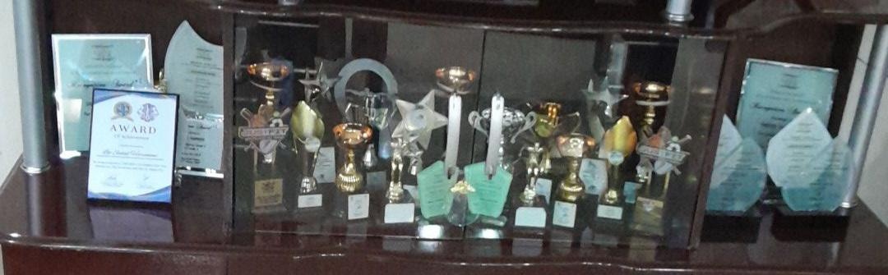
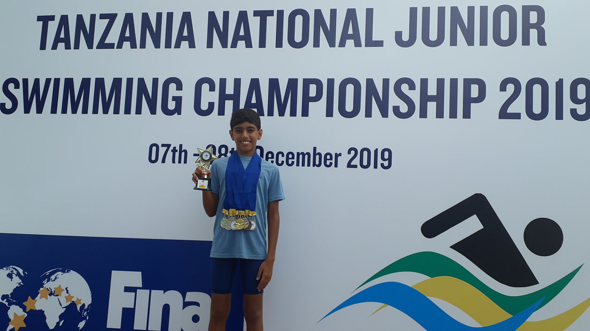
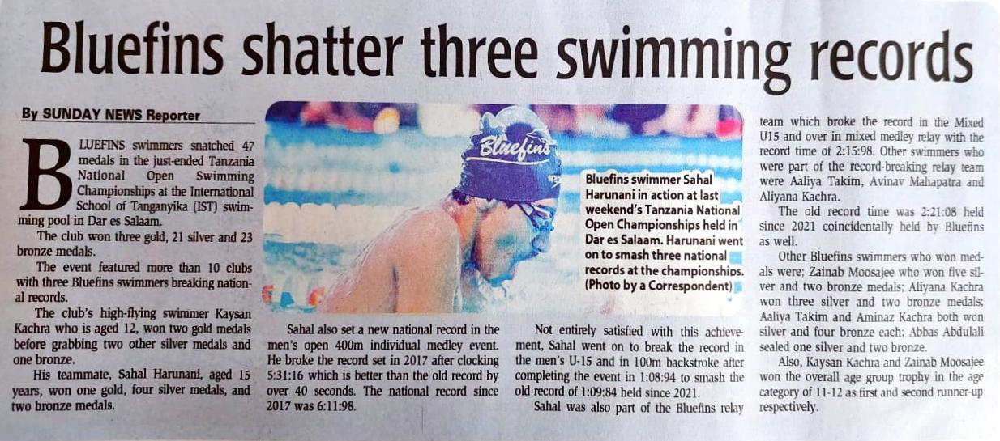

Competitive Swimmer | Athlete | Leader
Sahal shares stories from his training sessions, competitions, and how he balances school life with elite swimming. Stay tuned for updates!
Latest Highlight: Sahal reflects on his journey preparing for the Africa Aquatics Championships and breaking his national record.
I came into the swimming world in 2012, when I was about 4 years old. It was a very rough start to be honest. I used to be really terrified of water, hating it so much. I would dare not put even a foot into the swimming pool. I wouldn't even step into an area barefoot where there was water spilled on the ground, or barefoot in an area that has been mopped. I despised water to that extent. Can you imagine?!! My parents had a difficult time to handle me with this situation, going up and down, yet they did everything they could to help and support me, making me reach the stage where I am now!
I officially started learning how to swim at that age of 4 years old, where I joined Bluefins Swim Club, in Dar-es-Salaam, as my first and only club throughout my entire life. I started at the lowest group of the club named Nemo. I struggled a lot at the beginning with my enmity towards water, tiredness and breathing difficulties, but that did not let me stop my swimming, as well as my parents' dream of me becoming a successful swimmer.
In 2013, I was promoted to Ducklings, which was the next level of the swim club. I started to become so much more confident, and used to the water of the swimming pool as I continuously went for my training sessions. But no doubt I also used to enjoy and I was very eager to go for my trainings as we used to get a lot of play time!!
At 5 years old I had started my first inter-school swimming competition, competing within my nursery school, Al Muntazir. It was really an exciting moment and a pleasure as well, nevertheless a competition in which I was able to prove and test my strengths and skills in swimming.
On July 2014, I had been promoted to the Starfish group as beginners level 2 of Bluefins. The coaches had seen a lot of talent and potential in me, and guided me in every way to reach the senior and top-most level in swimming. It was at the age of 6 when I started to participate in various swimming competitions for my club within Tanzania, making me the youngest one in the club to achieve this feat.
It was undeniably a proud and sensational moment for me, my parents and relatives to be chosen to represent my club in national competitions!!! As I progressed to the Intermediate level, Penguins group at Bluefins, I had already participated in numerous meets which included: Taliss Invitational Swimming Championship, Isamilo Invitational gala (Mwanza), Tanzania Development Swimming Gala, Morogoro Invitational Swimming Gala (Morogoro), DSC Junior Invitational Swimming Championship, and even the Tanzania National Open Swimming Championship! And what is exhilarating is that my first medals came from these competitions, making me feel even more dedicated and motivated into competitive swimming!!
We're back with part 2 of my swimming journey!! I hope part 1 was interesting and motivational for those of you who read, and I aspire that the continuation will be as good as the beginning of my journey.
It was a dream for my parents for me to compete in such competitions at a very young age, and they along with my coaches were really impressed with my performances, as I kept improving after each meet. On 29th December 2016, at the age of 8 years, I had been promoted to the top and advanced group of the club, Dolphins! Genuinely, I was intimidated of training with the elder swimmers who were much faster than me, but at the same time I was astonished and contented that I was given the privilege to swim in that group with the bigger people, helping me improve my technique and speed.
With all of that, my medal and trophy count kept on increasing, and my times were improving (decreasing) gradually as I continued training. Furthermore, I was getting recognized more and more within the swimming community in Tanzania, as the Swimming Association had started to acknowledge my capabilities through various swim meets.
I am a person who never accepts defeat in anything regardless of what I do. I always like to win and be the top in everything, although yes I have been conquered by my competitors several times. Nevertheless, I always try to look back at the errors that I've made and the methods I can use to improve in my activities, so I come back stronger. Whenever I go for trainings, I consistently go with a fresh mind, ready to achieve my goals. I always try to be focused, put in my maximum effort, and make sure that I feel the pain, cause that is the way I will improve in my swimming. I am determined to go further and move big steps ahead, so I don't like taking things lightly and I make sure that I do my best, whether it's in training or in competitions.
When I was in grade 6, my parents gave me such great news which shocked me. Even my parents; they were astonished, but also wouldn't believe what they heard. Guess what??!!! I was given a message by the Tanzanian Swimming Association (TSA) saying that I have been selected to be part of the Tanzanian National Swimming team, representing the country in international competitions!! It was indeed some thrilling news that we got!! I mean at the age of 11, I honestly didn't expect myself to get into the national team, but it all came through hard work, dedication, personal belief, and prayers. It was a dream come true, in which I thanked Allah for giving me the opportunity to represent my country, and guiding me towards my goal!
I was first selected for the Tanzanian National Swim Team in December 2019, to participate in the CANA Zone 3 African Championships which were held in Nairobi, Kenya. Later on I was also selected to represent Tanzania in the first ever virtual CANA Zone 4 African Championships which were held in Dar in 2021 due to COVID-19. Moreover, I represented the country in the 7th CANA Zone 3 African Championships which were held in November 2022 in Dar es Salaam. Last year (2023) I was selected to be part of the national team in 2 swim meets namely: African Aquatics Zone 3 Championships, held in October in Rwanda, and the African Junior Championships, held in December in Mauritius. This year, again I have been selected in the preliminary squad to represent Tanzania in the 9th Africa Aquatics Zone Championships, which will be held in October 2024 in Burundi, and I pray that I make it in the final squad.
From the first moment that I entered the pool, obviously I hated it, and there was nothing more that I wanted than escaping from the pool. As I continued my trainings, I got used to the swimming pool and all my fears had eventually vanished. From there, I knew that I had found my passion. The love that I had for swimming, the thrill of gliding through the water, the coolness and refreshment of the pool, the rush and excitements of the competitions, the support that I got from everyone, and the thoughts of getting recognized as a swimmer, have driven me to push my limits and achieve more than I ever believed possible.
Join me as I recount the pivotal moments, the lessons learned, and the unforgettable experiences through my swimming life. Whether you're an aspiring swimmer, a sports enthusiast, or simply someone who loves a good story, I believe there's something here for you.
This is among the biggest achievements that I am really proud of myself. I started to win medals since 7 years old while racing in competitive swim meets. And just a year later, I went on to winning various trophies within different age groups. I am currently 16, and I still continue to win numerous medals and trophies which has tremendously pleased my family, friends, community, and myself too!! However, to be honest, it has become really difficult to win and reach the podium positions compared to when I was smaller, as now the competitions have indeed become stiffer. however, I don't give up! I always try my best to get into the podium as it is a great achievement. I currently have around 13 trophies and over 200 medals!!
What makes a swimmer to know that he/she is getting better and better after every competition is the determination of consistently maintaining or decreasing your best times. I still remember my timings of many events from when I was small, as I kept on checking whether or not I have been improving them. Genuinely, I have vastly improved all my timings from the time since I started swimming competitions until today, and that is another huge achievement! Obviously, at this stage it is really hard to continue beating my PB's in all events, as I have already set a big target. Nevertheless, It's my responsibility to make sure that I do whatever I can to decrease my times, so that I know I am improving and becoming a better swimmer. And if I don't beat my times in any event in any competition, I look back, think and question myself as to why I didn't manage to reduce my times, despite doing a lot of training. I get really upset. I make sure to look at my videos, find mistakes and correct them, so that I can save those milliseconds which can help me reduce my time. In swimming, every millisecond counts!!!
I can tell you that this is the greatest achievement that I have gained, and the most substantial attainment that has happened to me throughout my swimming life as of yet! One of the most proud, contented and honored moment within my entire life when I was first selected to represent Tanzania in swimming. It was a dream, but I never thought of it as possible. Until when I started winning medals and trophies, consistently beating my times, and getting well-known within the swimming community in Tanzania, I realized that I had the potential to get somewhere in swimming! I started training almost everyday, I had belief and hope, I was motivated and determined, I was well supported by my family and community, and most of all I prayed to my Almighty God to get me into the National team, and so I have!! I was in grade 6, just 11 years old when I first got selected to swim for the country in an International competition held in Nairobi, Kenya. Since then I have been part of the Tanzanian swimming Team continuing to represent my country in various African Championships. Some of the most notable competitions that I was selected for include: virtual CANA Zone 4 Championship, 7th CANA Zone African Championship, 8th Africa Aquatics Zone 3 African Championship, African Junior Championship, and now the 9th Africa Aquatics Zone 3 Championship later this year. Getting selected and being part of the team for each competition has been cherishing, exciting, honorable and memorable, and we hope it continues to be like this!!
For me this is something spectacular as I feel glad that I have the fastest time of a particular event at a certain competition. My records don't stay for long as there are many other faster swimmers who manage to break them, but just that satisfaction and pleasure makes me feel really proud and delighted!! I managed to break the record for 200 and 400 Individual Medley (IM) in Tanzania National Open Championship last year and set the record for those 2 events in that specific competition. But honestly even if it is only these 2 events, I feel really great about it cause I don't often see my name as the fastest swimmer in an event at a competition. It definitely hasn't been easy to achieve, but the feeling of holding a record is indescribable. It motivates me to train harder and aim for even better performances in future competitions.
